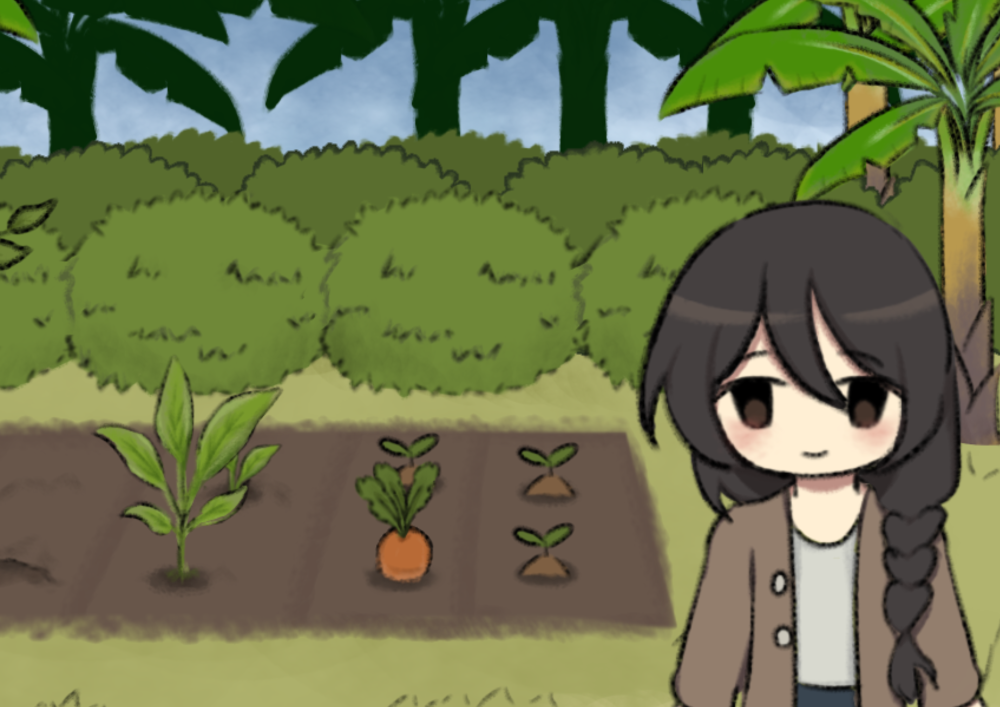

Intan telah selesai kuliah dan ia pun pulang ke kampung halamannya...

Dia naik bis umum menuju desa di lereng gunung...

Di sana, nenek dan keluarganya sudah menunggunya pulang...

Mereka ingin mengadakan acara Slametan dan memasak nasi tumpeng sebagai tanda syukur karena Intan telah menamatkan kuliahnya...

Esok paginya, Intan pergi ke pekarangan rumah untuk memanen beberapa bahan masakan